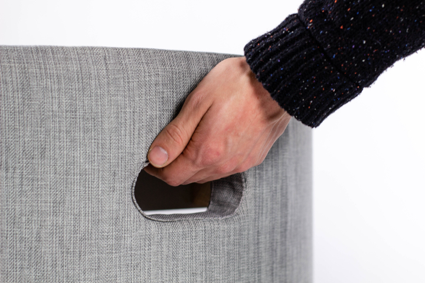
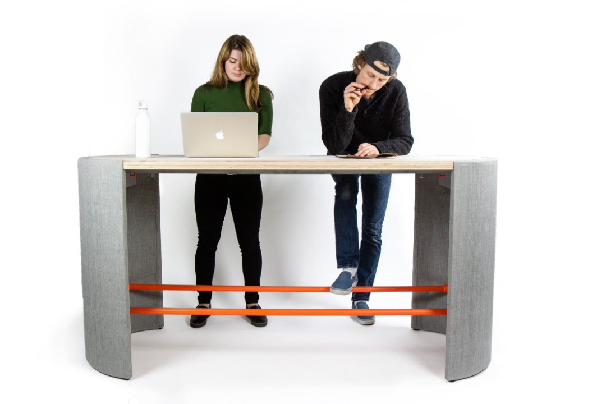
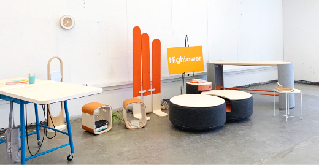

/ Project
Alla Table
Office place furniture has been built around antiquated standards. How can we make a meeting table that is more inclusive and meets modern needs?
Average desk height correlates to the elbow height of a 6’ 4” male. Other furniture proportions have traditionally been built around above average male proportions as well. This creates design mismatches and requires our attention because workplace furniture has not been keeping up with cultural advances.
The Alla Table is a meeting and working space that supports the developing needs of modern workplaces through designing outside the norms.
Isometric rendering of the Alla Table in context with other Hightower pr0ducts.
Overview
Team
Collaborators
Erika Haack
Erica Leedle
David Duyker
Personal Contributions
Design refinement
Prototyping
Model construction
Context
Overview
Our studio class operated as a semi autonomous design studio culminating with full scale, functional prototypes in sectors that Hightower was interested in innovating in.
Hightower furnishes workspaces with high quality and thoughtful items from their curated selection. They offer furniture from third-parties as well as in-house designs. Founded in 2003 on the premise that the industry was lacking design oriented workspace furnishings to accent the new and evolving working styles. Our studio class operated as a semi autonomous design studio culminating with full scale, functional prototypes in sectors that Hightower was interested in innovating in.
Duration
8 weeks - Winter 2018-19
Instructor
Michael Kritzer
Starting Point
Product Brief
"We want to introduce an informal meeting table that caters to democratic decision making versus a more traditional ‘leader at the head of the table’ style. ”
- Hightower Product Brief
view the project brief document →
Design Principles
*Developed from the product brief and initial research at the refinement stage
Collaboration
The space and the product should make working together easy.
Modularity
The furniture should be able to adapt to what the audience needs.
Flexibility
That doesn’t necessarily mean the furniture has to move, but it should allow for ease of user movement while they’re working.
Comfort
Bringing elements of home to the office space.
Features
Inclusive Dimensions
Lower Bar Height
In a space tailored to above average male height Alla Table breaks that standardization. Suitable as a meeting space for a wide range of heights. Standing desks like Alla Table have a general and obvious flaw of being exclusive to differently abled people. For example people who use wheelchairs will experience a mismatch. This is a reality of office spaces that should be addressed and an area where Alla Table does not meet inclusive design standards.
Wide utility
Meetings + Workspace +
We carefully considered table dimensions and layout to suit a variety of needs, from meetings to temporary workspace. Without a ‘head of the table’ the modern values of equality in ideas is functionally supported. The end caps also provide space for the laptops and other items brought to meetings. Moving those items out of the center of the table encourages more personal connection.
Power Module
Modern workplaces require accessible power for workspaces as well as meetings. Integrated power is a must for Alla Table to support the needs of the user.
When other power sources are readily available the Alla Table can adapt. Having graceful adaptation option allows for Alla Table to be more flexible in diverse work spaces.
Storage
Hanging Knobs
Storage was a key insight that we gained from our research. The knob hooks recessed into the ends of the table have been tested for convenience of use and help take advantage of all the vertical space available in the ends of the table.
Optional Shelf
Alla Table helps keep modular office spaces visually appealing without sacrificing on utility. Multi use spaces can develop a cluttered feel when bags and accessories are necessarily brought into the space. This optional shelf can be a key way to maintain a organized space.
Process
Starting Concept
The initial phases of the design process were done by Erika Haack. Her concept proposal was a fantastic bases that we refined and built specifications from. If you would like to view her concept doc you can view it here →
Below are concept sketches and a rendered conceptual model from Erikas work. This was our starting point from which we began our refinement, specification, and prototyping.
Selected sketches and render by Erika
From this stage Erica Lee, Erika Haack, and I collaborated as a team to deliver the table you read about above in the features section.
Refinement
Exploration
sketches
In order to refine the Alla Table concept we all explored new ways and forms with which we could further align with the needs of the users. Based on the research we had done individually and as a team we emphasized storage and power integration in our explorative sketches. Above are my contributions to our collaborative process.
Client Meetings
Features
At this phase we met with the Hightower furniture designer and leadership. The goal was to refine design features to align with their targets. Pictured are some feature slides we created for that conversation. View the entire meeting presentation here →
Prototype
Focused on Proportions
Designed to be inviting; we dedicated a lot of our time to proportions. This included fine tuning the distance between each component: the floor and the foot rest, the foot rest and the bottom of the table top, as well as width and length to allow personal space and comfort for each participant in each meeting.
Build
Planning
Materials and construction
We carried the attention to detail displayed in the design process into the build phase as well. Dialing in material costs and construction plan was key to building the high quality model.
Fabricating
High Quality Functional Prototype
Our final model was fully usable with the exception of the electrical components. This process involved flexible problem solving as some planned methods failed on execution. We utilized a wide range of techniques from 3d printed components to wood frame upholstery.
Final Model
 Delivery + Display
Alla table, or “everyone’s table” in Swedish was presented to the leadership and designers at Hightower and displayed at the University of Washington Senior Design Show.